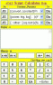
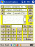
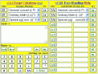

sCal -- Questions/Answers   Load up any of the current versions of sCal by clicking on thumbnails above, and work along with the text. [sCal2 will not be available, nor the Draft Documentation, without the full download package from the SourceForge Project Page.] |
function *}Cap.Recov: re-Pay
{
I=/*int.%/prd*/ ; // User input values, call input routine.
N=/*#.periods*/ ;
P=/*Principl$*/ ;
/*=repay/period @m eg: 9%APR (=0.75%/mo.) for 36mo, repay $10000 @ $318/mo.*/
i=I/100;
y=Math.pow(1+i,N);
m=Mr(P*i*y/(y-1),2)+'/prd.'; // Program output values routine.
xRedo=1
}
One hopes that its quite clear that the code above (with a substitution so (1+i)N doesn't have to be computed twice) is mostly a translation of the standard formula. That's all there is to it. But lets go through the JScrAp line-by-line:<!-- This JScrAp adds Table of Contents (ToC) to HTML doc, linking to Headings (in this case, designated by <h3>. . . .</h3> tags--or other, as user edits) while inserting links back from those headings to the ^top^ (#sCal-QA-head, here). NOTES: (1- Cut code between ToC location thru bottom of text with Headings; (2- Paste into sCal x-display; (3- Click [x>m]; {3a- Cannot usually paste directly to m-memory, depends on Browser, some more tolerant (IE6) than others; (4- Call this JScrap and [do]; (5- Copy/Paste from m back to original HTML document; {5a- this routine likely ruins any nice formatting in original HTML.-->
<option value="/*=see comments above*/ tLink='#sCal-QA-head'; topLink='<br> _ _ _ _ <small><a href='+tLink+'>^top^</a></small> _ _ _ _<br>'; Im(); var D1=m.split('<h3>'); for(j=1;j<D1.length-1;j++) {cutPt=D1[j].indexOf('</h3>'); a=D1[j].substring(0,cutPt); b=D1[j].substring(cutPt+5); Na='#'+j; D1[0]=D1[0]+'<a href='+Na+'>'+a+'</a><br>'+NL; D1[j]=topLink+'<h3><a name='+j+'>'+a+'</a></h3>'+b} m=D1.join(NL); Om();">
*} <h3> > html ToC {m</option>
<!-- also for the sCal-x "HTML JavaScript" section: make a routine to convert old style JScrAps to new. Won't help the ones with n[0..19] arrays, but will save a lot of time on the conversion blocks: Length, Area, Force/Mass, etc.-->